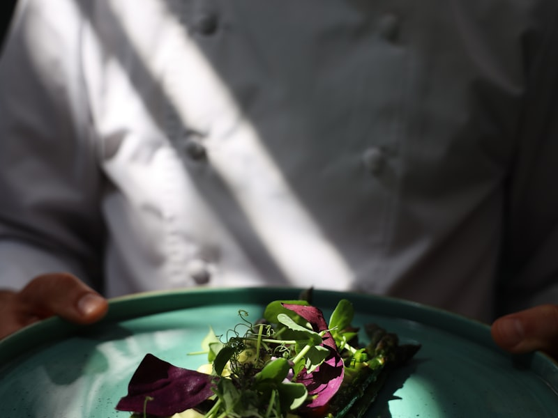

Un légume mal-aimé
Boule rugueuse, racineuse, couverte de terre — le céleri-rave n'a jamais gagné de concours de beauté. Sur les étals, il intimide. On ne sait pas trop par où l'attaquer, et beaucoup le laissent de côté au profit de légumes plus dociles. C'est précisément ce qui nous a attirés.
Car derrière cette enveloppe ingrate se cache une chair dense, parfumée, à mi-chemin entre la noisette et le persil. Le céleri-rave se prête à tout : râpé cru en rémoulade, rôti entier comme une pièce de viande, réduit en purée soyeuse, taillé en fines lamelles façon raviole. Peu de légumes offrent une telle amplitude. Et en plein hiver wallon, quand le maraîcher n'a presque plus rien à proposer, lui reste fidèle au poste.
« Le céleri-rave, c'est notre champignon de l'hiver. Il a cette profondeur de goût qu'on cherche habituellement dans une viande braisée — sauf qu'il sort de la terre, à vingt kilomètres d'ici. »
La technique de la croûte
Notre version signature naît d'un geste simple emprunté à la cuisson en croûte de sel : nous enveloppons le céleri-rave entier dans une pâte d'herbes sauvages et de farine d'épeautre, puis nous le cuisons lentement, près de deux heures, à basse température. La croûte n'est pas faite pour être mangée — elle est un four dans le four. Elle emprisonne l'humidité et concentre les arômes.
À la sortie, on casse la croûte devant le convive. La vapeur parfumée s'échappe, la chair est fondante jusqu'au cœur, presque confite. On la sert nappée d'un jus de champignons réduit et d'une purée de panais. Rien d'autre. Quand un produit est juste, il n'a pas besoin qu'on le déguise.

De la terre à l'assiette
Nos céleris-raves viennent de la ferme Renard, à Fernelmont, à vingt-deux kilomètres de la salle. Émile les arrache à la main, en pleine saison froide, et nous les livre encore couverts de terre — c'est ainsi qu'ils se conservent le mieux. Cette proximité change tout : entre la récolte et l'assiette, il s'écoule rarement plus de quarante-huit heures.
C'est aussi pour cela que notre carte change toutes les six semaines. Quand le céleri-rave laisse place aux premières asperges du printemps, le plat disparaît, et c'est très bien ainsi. Une cuisine de saison, c'est une cuisine qui accepte de dire au revoir. Le céleri-rave reviendra à l'automne prochain — et il sera, de nouveau, le roi de l'hiver.
Envie de découvrir cette saison dans notre salle ?
Réserver une table